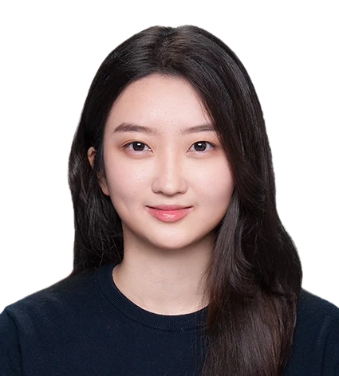
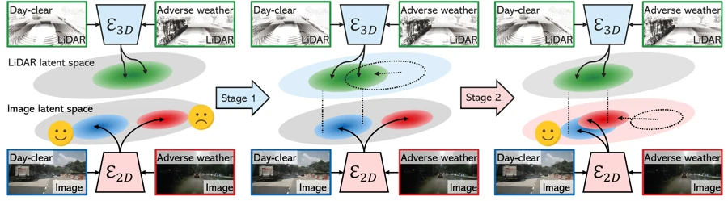
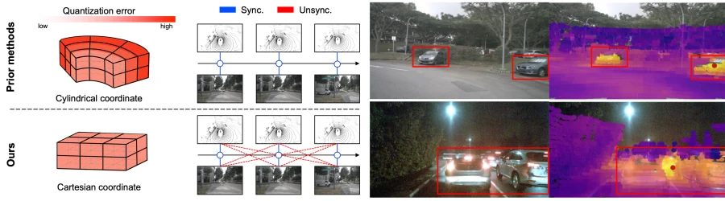
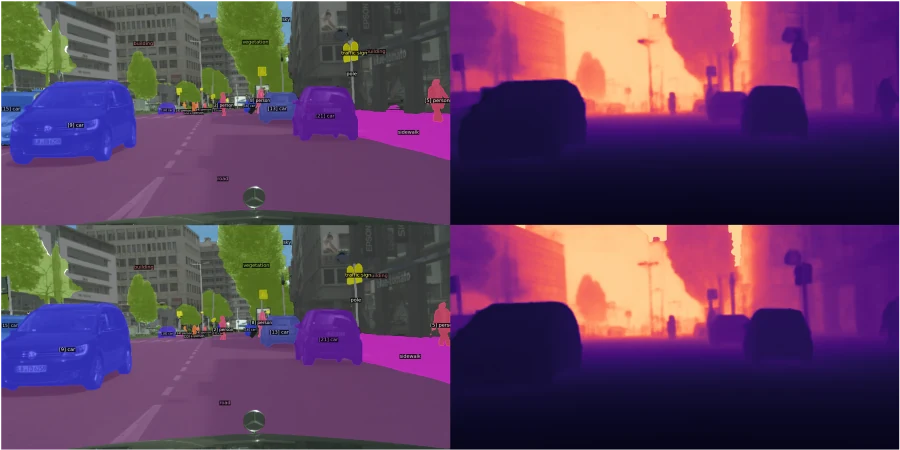
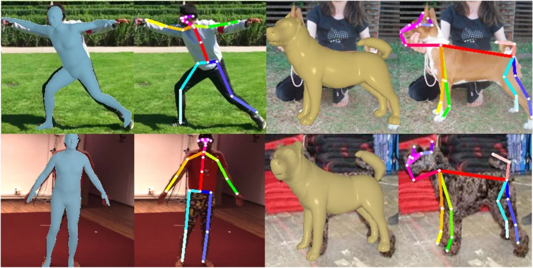

I am a Ph.D. student at POSTECH, advised by Prof. Tae-Hyun Oh.
My recent research focuses on reconstructing and generating 3D/4D human–object interactions. In particular, I am interested in how people interact with objects and each other, with the goal of building digital twins that simulate real-world interactions for content creation and robot learning.
Email: jiyeon.kim [at] postech [dot] ac [dot] kr



